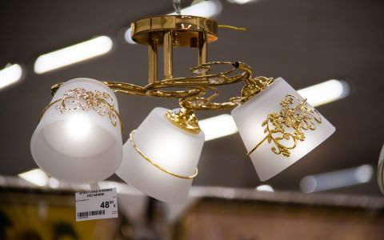
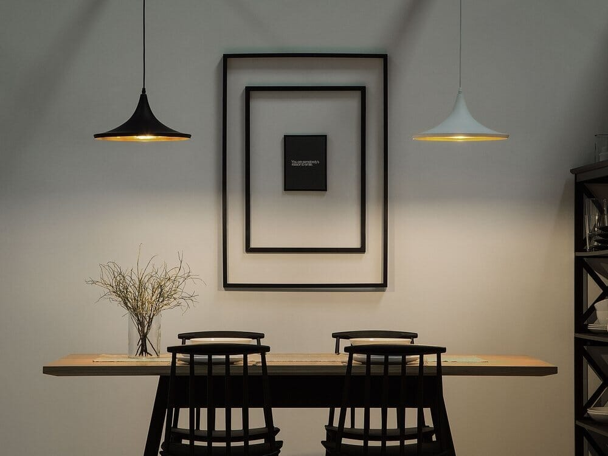

Šviestuvai internetu - Žiburys
 Į turinį Prekių pristatymas ir grąžinimas Kontaktai
Tel.: +370 699 46924
0.00 € 0Krepšelyje nėra produktų.
0Krepšelis
Krepšelyje nėra produktų.
MENU MENU Vidaus šviestuvai Sietynai Pakabinami šviestuvai Lubiniai šviestuvai Kryptiniai šviestuvai Įleidžiami šviestuvai Sieniniai šviestuvai Toršerai Staliniai šviestuvai Šviestuvai skaitymui Akcentiniai šviestuvai ant bėgelio LED apšvietimas LED panelės LED lemputės LED profiliai LED juostos LED maitinimo šaltiniai LED juostų valdikliai Judesio davikliai Lauko šviestuvai Lubiniai lauko šviestuvai Apšvietimo stulpeliai Sieniniai lauko šviestuvai Sodo šviestuvai Grindinio šviestuvai Pagal patalpą Virtuvės ir valgomojo šviestuvai Svetainės šviestuvai Vaikų kambario šviestuvai Vonios šviestuvai Miegamojo šviestuvai Koridoriaus šviestuvai Garažo šviestuvai Pagal stilių Skandinaviški šviestuvai Klasikiniai šviestuvai Modernūs šviestuvai Vintažiniai industriniai šviestuvai Jungikliai JUNG A serija JUNG SL serija JUNG CD serija JUNG LS serija JUNG mechanizmai Apšvietimo idėjos Virtuvės apšvietimo idėjos Svetainės apšvietimo idėjos Miegamajo apšvietimo idėjos Vonios apšvietimo idėjos Vaikų kambario apšvietimo idėjosVidaus šviestuvai
Tinkamai parinkti šviestuvai ne tik skleidžia norimą šviesą ir padeda sukurti funkcines zonas, bet ir kuria namų nuotaiką bei stilių. Susipažinkite su plačiu šviestuvų asortimentu įvairiems vidaus apšvietimo sprendimams. Čia rasite klasikinio, skandinaviško, modernaus, vintažinio industrinio stiliaus lubinius, kryptinius, sieninius, stalinius šviestuvus bei toršerus apšviesti visoms namų erdvėms.
Lubiniai
Lubiniai paviršiniai šviestuvai labai gerai atrodo mažose erdvėse bei patalpose žemomis lubomis. Jei norite sukurti jaukią atmosferą ir vizualiai padidinti erdvę, jų skleidžiama, visą kambarį užpildanti šviesa, tam puikiai tiks.
Kryptiniai
Pasirūpinkite apšvietimu ten, kur jis svarbiausias Jums, atliepiant individualius poreikius. Kryptiniai šviestuvai padeda nukreipti šviesą tik ten, kur jos reikia. Šis papildomas apšvietimo būdas puikiai tinka darbo zonai, skaitymo kampeliui ar virtuvei.
Sietynai
Sukurkite tobulą apšvietimą svetainėje, įneškite elegancijos į vonios kambarį ar netikėtos žaismės vaikų kambaryje. Sietynai lengvai prisitaiko praktiškai prie bet kokios erdvės. Žiburio asortimente galite rasti krištolinių, klasikinių bei modernaus tipo sietynų.
Pakabinami
Pasirinkite Jūsų kambariui tinkamiausią apšvietimo aukštį. Pakabinami šviestuvai prie lubų tvirtinami laidu, kurio ilgis įprastai reguliuojamas. Mūsų kolekcijoje rasite dekoratyvių, stilingų šviestuvų, kurie skleidžia pakankamai daug šviesos.
Įleidžiami
Taupykite vietą ir rinkitės modernius sprendimus. Įleidžiami šviestuvai formuoja šviesą žemyn, puikiai tinka erdvėms žemomis lubomis. Tokio tipo apšvietimas dažnai naudojamas virš stalo maistui ruošti arba vonios kambaryje virš dušo kabinos ar pačios vonios.
Sieniniai
Kurkite ypatingą nuotaiką. Sieniniai šviestuvai – puikūs pagalbininkai ne tik kuriant funkcines zonas, bet ir norint prislopinti ar išskaidyti šviesą. Jie dažniausiai naudojami vietiniam apšvietimui, o jų skleidžiama šviesa suteikia erdvei rafinuotos elegancijos.
Staliniai
Susikurkite švelnų, kokybišką, sveikatai palankų apšvietimą darbo vietoje. Staliniai šviestuvai – puikus sprendimas, kai reikalinga ryški šviesa konkrečiai užduočiai atlikti. Platus įvairiausių stilių modelių pasirinkimas leis išsirinkti tinkamiausią variantą, geriausiai atitinkantį Jūsų individualius poreikius.
Toršerai
Kurkite savo namų stilių dekoratyviu apšvietimu. Silpnesnė, pritemdyta, dažniausiai į viršų nukreipta šviesa – puikus įrankis, norint sukurti romantišką, paslaptingą atmosferą. Toršerai padeda sukurti norimą stilių, išgauti vientisumo ir išbaigtumo įspūdį.
Led apšvietimas
LED technologija leidžia kurti naujoviškus ir itin gražius dizaino sprendimus. LED apšvietimas taip pat užtikrina neįtikėtiną energijos vartojimo efektyvumą, neprarandant šviesos kokybės ar galios. Tai itin efektyvus, ilgalaikis, aplinkai nekenksmingas ir puikiai valdomas apšvietimas. Žiburys siūlo itin platų LED gaminių asortimentą.
Led panelės
Galvokite apie ateitį ir pradėkite taupyti elektros energiją jau dabar. LED šviesos panelės suteikia ilgesnį tarnavimo laiką (iki 50 000 val.) ir užtikrina mažesnį (iki 80%) energijos suvartojimą. Gausus modelių pasirinkimas leidžia plačiai pritaikyti apšviečiant vidaus patalpas, darbo paviršius bei teritorijas, esančias lauke.
Led prožektoriai
Apsaugokite savo namų aplinką ir verslo pastatus bei teritorijas. LED prožektoriai skleidžia daug šviesos, yra atsparūs aplinkos poveikiui, vartoja mažai elektros energijos, be to yra lengvai montuojami beveik visuose paviršiuose. Jie padeda sukurti saugią, jaukią ir komfortišką aplinką.
Led profiliai
Įgyvendinkite apšvietimo idėjas su LED profiliais tiek lauke, tiek patalpose. Jiems būdingas funkcionalumas ir įvairovė, šis gaminys lengvai montuojamas į įvairius paviršius. Siūlome platų LED profilių pasirinkimą.
Led lemputės
Naudokite šiuolaikišką, gamtą, sveikatą tausojantį apšvietimą. LED lemputės – ekologiškesnis ir taupesnis pasirinkimas, lyginant su tradicinėmis kaitrinėmis elektros lemputėmis. Efektyvumą lemia tai, kad jos išskiria tik šviesą ir neeikvoja energijos šilumai.
Šviestuvai pagal stilių
Planuojant apšvietimą, labai svarbu atsižvelgti į bendrą interjero stilių, nepamirštant, kad šviestuvai ne tik atlieka svarbią praktinę funkciją, bet ir estetinę. Siekdami įgyvendinti įvairių stilių gerbėjų poreikius, siūlome platų įvairių stilių šviestuvų pasirinkimą. Pas mus rasite klasikinius, skandinaviškus, modernius bei industrinio stiliaus šviestuvus.
Modernūs
Paverskite šviestuvą interjero akcentu. Moderniam stiliui būdingas skirtingų medžiagų tarpusavio derinimas bei spalvų žaismas. Susipažinkite su mūsų siūlomu modernių šviestuvų asortimentu ir suraskite tai, kas Jus džiugintų namuose!
Vintažiniai ir industriniai
Vintažiniai šviestuvai dažnai sutinkami ne tik industriniuose barų ar restoranų interjeruose, bet ir šio stiliaus gerbėjų namuose. Šiam stiliui būdingi neutralūs šalto metalo atspalviai, kuriuos lengva priderinti prie kitų interjero detalių. Žiburys siūlo puikų lubinių bei sieninių vintažinių šviestuvų asortimentą.
Skandinaviški
„Mažiau yra daugiau“ filosofija visiškai pasiteisina skandinaviškuose interjeruose. Šiam stiliui būdingas minimalizmas, šviestuvai neapkrauti bereikalingomis detalėmis, vyrauja pasteliniai atspalviai, medžio elementai. Siūlome skirtingų tipų šviestuvus, kurie atitiks visus skandinaviškam stiliui keliamus standartus ir padės sukurti vientisą stilių bei jį papildyti.
Klasikiniai
Suteikite interjerui laikui nepavaldžios prašmatnios elegancijos. Neatskiriama klasikinių šviestuvų dalis yra forma ir simetrija bei švelnūs, dekoratyviai užapvalinti kraštai. Krištolinis sietynas puikiai papuoš klasikinį interjerą, tačiau mūsų asortimente rasite ir daugybę kitų pasirinkimų.
Šviestuvai pagal erdves
Kiekviena patalpa pasižymi skirtingomis funkcijomis ir sąlygomis, tad renkantis šviestuvus svarbu įvertinti apšvietimo poreikius pagal tai, kokioje erdvėje jis bus kabinamas ir kokią užduotį atliks. Žiburyje rasite platų pasirinkimą visiems namų kampams – virtuvei, valgomajam, svetainei, miegamajam, vonios, vaikų kambariams ir kitoms erdvėms.
Virtuvės
Užpildykite namų širdimi vadinamą virtuvę ypatingu dėmesiu ir nuostabia šviesa. Turime daugybę stilingų, šiuolaikiškų ir šviesą taupančių šviestuvų, kurie padės sukurti ypač jaukią ir šiltą atmosferą. Jūsų patogumui sukūrėme patogią prekių filtravimo sistemą, kuri padės greičiau ir efektyviau išsirinkti norimą šviestuvą.
Svetainės
Pasirūpinkite jaukia ir poilsiui nuteikiančia atmosfera svetainėje. Dažniausiai būtent čia po darbų susirenka visa šeima, renkasi svečiai, tad reikalingas ne tik pagrindinis šviestuvas, dažnai tampantis ir interjero akcentu, bet ir foninis apšvietimas, kuriantis nuotaiką.
Koridoriaus
Užtikrinkite gerą pirmąjį įspūdį. Juk būtent koridorius yra ta erdvė, kur tiek namiškiai, tiek svečiai patenka pirmiausia. Siūlome platų koridoriaus šviestuvų pasirinkimą, kurie padės užtikrinti ne tik pakankamą šviesos kiekį patalpoje, bet ir kurti svetingą atmosferą.
Miegamojo
Sukurkite poilsiui nuteikiančią, atpalaiduojančią erdvę. Miegamasis skirtas ramybei, kokybiškam miegui ir intymumui, tad čia reikėtų vengti pernelyg ryškių, akinančių, erzinančių šviesų, rinktis prislopintą šviesą ir papildomą apšvietimą skaitymui.
Vonios
Rinkdamiesi vonios šviestuvus, pasirūpinkite ir praktine puse. Vonios kambarys yra drėgniausia namų patalpa, tad svarbu atsižvelgti į šviestuvų atsparumą vandeniui. Žiburio asortimente rasite tiek dažniausiai naudojamus kryptinius šviestuvus, tiek gerokai originalesnių sprendimų vonios apšvietimui.
Vaikų kambario
Pasirūpinkite žaismingais ir saugiais šviestuvais vaikų kambariui. Būtent mažyliams skirtose patalpose vyrauja daugiausia spalvų ir netikėčiausių formų. Siūlome gausų vaikų kambario šviestuvų pasirinkimą, kurie padės sukurti nuotaikingą, smagią erdvę.
Laukui ir sodui
Jei gyvenate name, kotedže, ar turite sodo namelį, svarbu atsakingai parinkti lauko apšvietimą. Kartais tai gali būti grindinis apšvietimas, kartais tai pakabintas žibintas už durų, o neretai aktualu apšviesti ir atskiras sodo bei kiemo zonas. Čia svarbus IP reitingas, nes šviestuvai ir apšvietimo įranga turi būti atspari oro sąlygoms. Mažiausias rekomenduojamas reitingas lauko ir sodo šviestuvams yra IP44. Rinkitės iš gausaus lauko ir sodo šviestuvų asortimento.
RINKTIS ŠVIESTUVUSJUNG jungikliai ieškantiems kokybės
„JUNG“ jungikliai gaminami naudojant pažangiausias technologijos, pasižymi rafinuotu dizainu ir funkcionalumu, saugumu, ekonominiu bei energetiniu efektyvumu. Vokietijos gamintojai rinkoje jau daugiau nei 100 metų ir per tą laiką pelnytai užsitarnavo meistrų vardą. Susipažinkite su aukščiausios kokybės, patvariais gaminiais ir išsirinkite sau geriausią variantą.
RINKTIS PREKESStatai būstą, reikia pigiau?
Ateikite su elektros projektu būstui ir perkant visus komponentus pas mus galėsime pritaikyti nuolaidas.
Susisiekite +37069946924
Paskambinkite mums pasistengsime atsakyti į jums rūpimus klausimus. Konsultacija nieko nekainuoja.
30 dienų pinigų grąžinimo garantija
Nepatiko įsigyta prekė? Ne problema, suteikiame 30 dienų pinigų grąžinimo garantiją įsigytai prekei.
Vidaus šviestuvai LED apšvietimas Lauko šviestuvai Pagal patalpą Pagal stilių Jungikliai Apšvietimo idėjos © 2019 Visos teisės saugomos. Šviestuvai Lubiniai šviestuvai Pakabinami šviestuvai Kryptiniai šviestuvai Įleidžiami šviestuvai Sietynai Toršerai Sieniniai šviestuvai Šviestuvai skaitymui Staliniai šviestuvai Akcentiniai šviestuvai ant begelio LED Apšvietimas Led lemputės LED panelės LED juostos LED profiliai LED prožektoriai LED juostų valdikliai Judesio davikliai Pagal patalpą Pagal stilių Skandinaviški šviestuvai Klasikiniai šviestuvai Modernūs šviestuvai Vintažiniai industriniai šviestuvai Lauko šviestuvai Jungikliai JUNG A serija JUNG SL serija JUNG CD serija JUNG LS serija JUNG mechanizmai Apšvietimo idėjos Virtuvės apšvietimo idėjos Svetainės apšvietimo idėjos Miegamajo apšvietimo idėjos Vonios apšvietimo idėjos Vaikų kambario apšvietimo idėjos Prekių grąžinimas Kontaktai PrisijungtiPrisijungti
Registruotis
